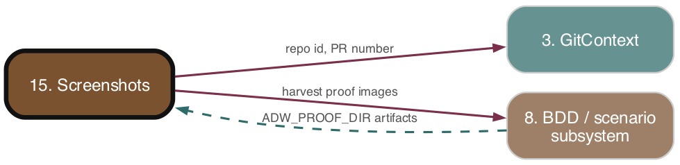

Subsystem 15 of 16
Screenshots
As-is reference. Ground truth: source code.

Purpose
The review-screenshot pipeline harvests BDD scenario screenshot artifacts produced during scenario test runs, uploads them to per-repo Cloudflare R2 buckets via the S3-compatible API, and embeds the resulting public URLs into a PR "BDD Proof" comment. A standalone Cloudflare Worker (screenshot-router) serves those images publicly under screenshots.paysdoc.nl/{repo}/{key} and garbage-collects empty buckets on a daily cron. This is workflow-driven PR test-proof infrastructure, not an interactive tool.
Responsibilities
- Construct an S3 client pointed at Cloudflare R2 (
r2Client.ts). - Lazily create per-repo buckets named
adw-{owner}-{repo}with a 30-day expiration lifecycle rule (bucketManager.ts). - Upload image bytes and return a stable public URL (
uploadService.ts). - Recursively harvest image artifacts from the scenario proof artifacts dir (
proofArtifactHarvester.ts). - Compose and post a PR proof comment with JUnit summary table + grouped inline screenshot embeds (
prProofPublisher.ts). - Host/serve public objects and GC empty buckets (
workers/screenshot-router).
Key Files
| Path | Role |
|---|---|
| --- | --- |
adws/r2/r2Client.ts |
Pure factory: builds S3Client for R2 endpoint https://{accountId}.r2.cloudflarestorage.com, region auto. |
| --- | --- |
adws/r2/bucketManager.ts |
toBucketName, ensureBucket — lazy bucket creation (LocationConstraint: 'EU'), 30-day lifecycle rule, in-process knownBuckets cache, race-tolerant. |
| --- | --- |
adws/r2/uploadService.ts |
uploadToR2 — builds R2Config from env, ensures bucket, PutObjectCommand, returns {url, bucket, key}; URL = https://screenshots.paysdoc.nl/{repo}/{key}. |
| --- | --- |
adws/r2/types.ts |
R2Config, UploadOptions, UploadResult, BucketInfo. |
| --- | --- |
adws/r2/index.ts |
Barrel export. |
| --- | --- |
adws/proof/proofArtifactHarvester.ts |
harvestProofArtifacts(dir) — recursive image walk (.png/.jpg/.jpeg/.gif/.webp), POSIX-normalised relPaths, sorted. |
| --- | --- |
adws/proof/prProofPublisher.ts |
formatPrProofComment (pure) + publishPrProof (impure: harvest → upload → format → commentOnPR). |
| --- | --- |
adws/proof/types.ts |
ProofArtifact, UploadedArtifact, TagProofResultLike, PublishDeps (DI for uploader/commenter). |
| --- | --- |
adws/phases/proofPublishPhase.ts |
executeProofPublishPhase — reads ctx.scenarioProof + ctx.prUrl, calls publishPrProof; non-fatal, zero cost. |
| --- | --- |
adws/phases/scenarioProof.ts |
Runs tagged scenarios, sets ADW_PROOF_DIR={proofDir}/artifacts so step defs write screenshots there; returns artifactsDir. |
| --- | --- |
adws/github/proofCommentFormatter.ts |
Separate issue-comment review formatter; screenshotUrls/screenshots fields are explicit "placeholder for future wiring" — NOT wired to R2. |
| --- | --- |
workers/screenshot-router/src/index.ts |
CF Worker: fetch serves /{repo}/{key} from adw-paysdoc-{repo}; scheduled (cron 0 3 * * *) deletes empty adw-* buckets. |
| --- | --- |
workers/screenshot-router/wrangler.toml |
Route screenshots.paysdoc.nl/*, zone paysdoc.nl, smart placement (EU), cron, R2 via S3 secrets (no static bindings). |
Behavior & Flows
- Capture —
scenarioTestPhaserunsrunScenarioProof, which wipes/creates{proofDir}/artifactsand runs each config tag viarunScenariosByTag, passingADW_PROOF_DIR(andADW_JUNIT_REPORT_PATH) into the scenario subprocess env. Target-repo step definitions write screenshot images into that dir. Result (ScenarioProofResultincl.artifactsDir,tagResults) is set onconfig.ctx.scenarioProof. - Publish —
executeProofPublishPhaseextracts PR number fromctx.prUrl, resolves{owner, repo}(fromrepoContext.repoIdorgetRepoInfo()), and callspublishPrProof. - Harvest+Upload —
publishPrProofskips ifprNumber <= 0orartifactsDir/scenarioProofmissing. Harvests artifacts; if R2 env vars present and artifacts exist, uploads each as keyproof/{adwId}/{relPath}with ext-derived content type. Per-upload failures logged and swallowed. - Comment —
formatPrProofCommentbuilds:camera: BDD Proofwith pass/fail status line, passed/failed tally, summary table, and per-scenario<details>groups of[](url)embeds (grouped by leading relPath segment). If R2 unconfigured and no uploads:_R2 is not configured_note.ADW_SIGNATUREappended; posted viacommentOnPR. - Serve — A reader hitting
screenshots.paysdoc.nl/{repo}/{key}triggers the Worker, whichGetObjects fromadw-paysdoc-{repo}, streams the body withCache-Control: public, max-age=86400, returns 404 for missing key/bucket. - GC — Daily cron lists
adw-*buckets, deletes any with zero objects (per-bucket errors tolerated).
Data Structures
R2Config { accountId, accessKeyId, secretAccessKey, publicBaseUrl }.UploadOptions { owner, repo, key, body, contentType? }→UploadResult { url, bucket, key }.ProofArtifact { absPath, relPath };UploadedArtifact { scenario, url, fileName }.PublishDeps { artifactsDir?, scenarioProof?, prNumber, repoInfo, adwId, uploader?, commenter? }.- Bucket name:
adw-{normalise(owner)}-{normalise(repo)}, lowercased, hyphen-only, ≤63 chars. - Object key (proof):
proof/{adwId}/{relPath}. Public URL:{publicBaseUrl}/{repo}/{key}.
Public Interface
createR2Client(config),toBucketName(owner, repo),ensureBucket(client, owner, repo),uploadToR2(options)(re-exported fromadws/r2/index.ts).harvestProofArtifacts(dir),formatPrProofComment(input),publishPrProof(deps)(re-exported fromadws/proof/index.ts).executeProofPublishPhase(config)(re-exported viaadws/workflowPhases.ts).- Worker default export
{ fetch, scheduled }.
Dependencies
- Upstream (depends on):
- Config & Environment 01. Config & Environment">(#1):
CLOUDFLARE_ACCOUNT_ID,R2_ACCESS_KEY_ID,R2_SECRET_ACCESS_KEYfromadws/core/environment.ts. @aws-sdk/client-s3,core/logger.- BDD/scenario subsystem 08. BDD / scenario subsystem">(#8):
ScenarioProofResult.artifactsDir+ theADW_PROOF_DIRenv-var seam for writing images. - Downstream (depended on by):
- Phases & orchestrators 07. Phases & orchestrators">(#7):
executeProofPublishPhasein the workflow sequence. - GitHub PR comment API (
commentOnPR).
Interactions
| Other subsystem | Direction | What is exchanged |
|---|---|---|
| --- | --- | --- |
| #8 BDD / scenario | inbound | ScenarioProofResult (artifactsDir, tagResults); ADW_PROOF_DIR passed to scenario subprocesses so step defs write screenshots. |
| --- | --- | --- |
| #7 Phases & orchestrators | inbound | executeProofPublishPhase invoked in phase sequence; reads ctx.scenarioProof, ctx.prUrl, repoContext. |
| --- | --- | --- |
| #1 Config & Environment | inbound | R2 credentials + account ID; absence degrades gracefully (no upload, "R2 not configured" note). |
| --- | --- | --- |
| #3 GitContext | inbound | getRepoInfo() / repoContext.repoId resolves {owner, repo}; extractPrNumber(ctx.prUrl). |
| --- | --- | --- |
| #5 Phase runner & cost | inbound | Emits PhaseCostRecord (proofPublish, success, cost 0). |
| --- | --- | --- |
| GitHub (via #7/#3) | outbound | Posts BDD Proof comment to the PR with ADW_SIGNATURE footer. |
| --- | --- | --- |
| Cloudflare R2 / Worker | outbound | PutObject to bucket; Worker GetObject/DeleteBucket serve and GC. |
PRD Divergences
adws/github/proofCommentFormatter.tsexposesscreenshotUrls(ProofCommentInput) andreviewAgent.screenshotsis in the review JSON schema, both documented as "placeholder for future wiring" — the issue-comment review path does NOT upload or render screenshots. Only the separate PR-proof path (prProofPublisher.ts) actually moves images to R2 and embeds them. Two parallel proof-comment formatters exist with overlapping table logic.